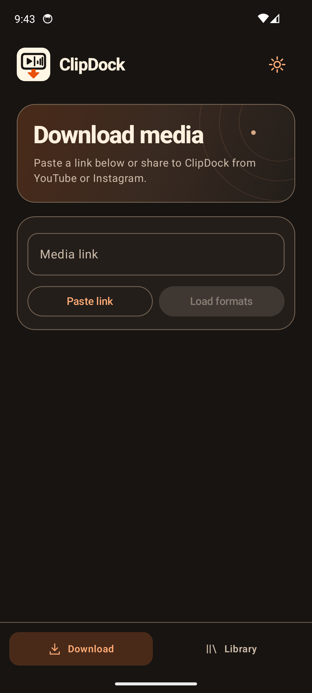

Made for Android
Save the video.
Keep the audio.
Share a link from YouTube, Instagram, or X to ClipDock. Pick an MP4 resolution or MP3 bitrate and save the file to your phone.

From link to library.
Share a link
Choose ClipDock in the Android share menu, or paste the link directly into the app.
Pick your format
Choose from available MP4 resolutions or MP3 bitrates. MP3 starts at 320 kbps by default.
Find it in Library
Play saved audio in the app, delete files, or open Downloads/ClipDock in your file manager.
ClipDock uses a companion service to load formats and process downloads. Save media you own or have permission to download.